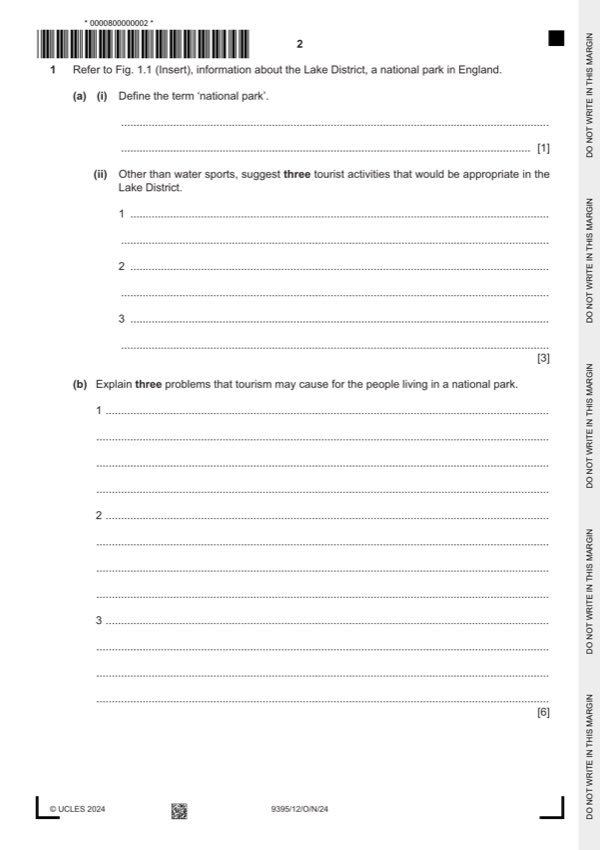

Question 1

Original paper page 2
Part 1(a)(i) — solution
Define the term ‘national park.’ 1
Award one mark for the correct explanation.
An area of land where both the landscape (both land and water) and lifestyles
are conserved with minimum development.
Accept any other reasonable response.
Mark points
- Include the ideas shown in the solution above.
Part 1(a)(ii) — solution
- Climbing / mountaineering
- Walking
- Trekking / hiking
- Photography
- Wildlife / bird spotting
- Sightseeing either natural flora & fauna or cultural / heritage
Mark points
- Climbing / mountaineering
- Walking
- Trekking / hiking
- Photography
- Wildlife / bird spotting
- Sightseeing either natural flora & fauna or cultural / heritage
Part 1(b) — solution
- Large numbers of visitors can cause road blocks (1) this will cause
- Loss of traditional jobs (1) as locals move into tourism. (1)
- House prices (or other prices) will rise (1) meaning local people may not
- Pollution from rubbish (1) dropped by large numbers causes the area to
- Erosion of footpaths is possible as large numbers of people walk over
- Employment can be seasonal (1) as visitors may not want to come during
Mark points
- Large numbers of visitors can cause road blocks (1) this will cause
- Loss of traditional jobs (1) as locals move into tourism. (1)
- House prices (or other prices) will rise (1) meaning local people may not
- Pollution from rubbish (1) dropped by large numbers causes the area to
- Erosion of footpaths is possible as large numbers of people walk over
- Employment can be seasonal (1) as visitors may not want to come during
Part 1(c) — solution
- Camp sites – close to outdoor activities / cheapest / easy to move from
- Hostels – normally set up with drying rooms / can accommodate large
- Guest houses – cheap but dry, offering more comfort than camping but
- Airbnb / house rental / apartment – would be suitable because there
- Hostels are often in out of reach places / more remote, closer to the
- Outdoor enthusiasts may also prefer Airbnb etc. / hostels / camp sites
- Outdoor enthusiasts may want to be more sustainable / responsible may
- Camp sites generally have a lesser impact on the environment / can be
- Outdoor enthusiasts are likely to look for accommodation that gives them
- Most people will stay in cheaper accommodation as they will be here for a
Mark points
- Camp sites – close to outdoor activities / cheapest / easy to move from
- Hostels – normally set up with drying rooms / can accommodate large
- Guest houses – cheap but dry, offering more comfort than camping but
- Airbnb / house rental / apartment – would be suitable because there
- Hostels are often in out of reach places / more remote, closer to the
- Outdoor enthusiasts may also prefer Airbnb etc. / hostels / camp sites
- Outdoor enthusiasts may want to be more sustainable / responsible may
- Camp sites generally have a lesser impact on the environment / can be
- Outdoor enthusiasts are likely to look for accommodation that gives them
- Most people will stay in cheaper accommodation as they will be here for a
Part 1(d) — solution
- Restricting visitor numbers to the area so that the national park does not
- Creating separate entry and exit routes for specific areas to manage
- Control over places to be visited – such as timed visits or licenses for
- Signposts / information about acceptable behaviour with wildlife or in
- Restrict visitor numbers prevents overcrowding and exhaustion of
- One-way systems on roads will keep traffic flowing through regions and
- Timing restrictions again prevents overcrowding which reduces impacts
- Information helps to educate both local people and tourists on appropriate
- There are many ways of managing tourism in national parks sustainably,
- National parks need to use a variety of methods to manage themselves
Mark points
- Restricting visitor numbers to the area so that the national park does not
- Creating separate entry and exit routes for specific areas to manage
- Control over places to be visited – such as timed visits or licenses for
- Signposts / information about acceptable behaviour with wildlife or in
- Restrict visitor numbers prevents overcrowding and exhaustion of
- One-way systems on roads will keep traffic flowing through regions and
- Timing restrictions again prevents overcrowding which reduces impacts
- Information helps to educate both local people and tourists on appropriate
- There are many ways of managing tourism in national parks sustainably,
- National parks need to use a variety of methods to manage themselves